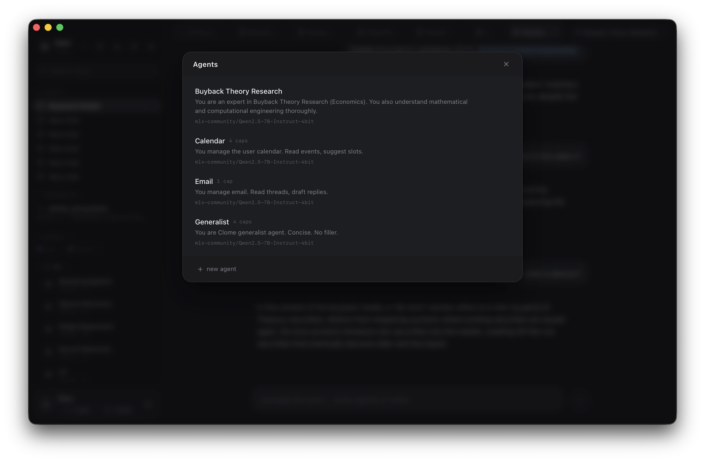
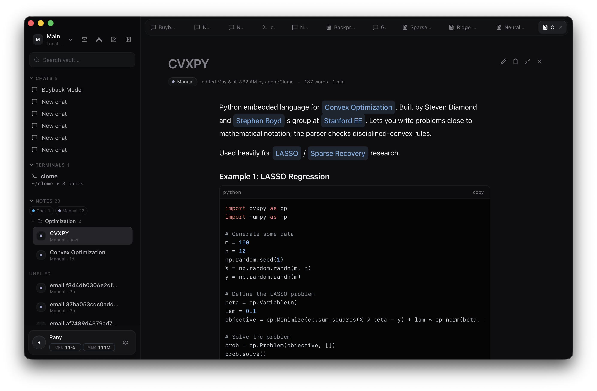
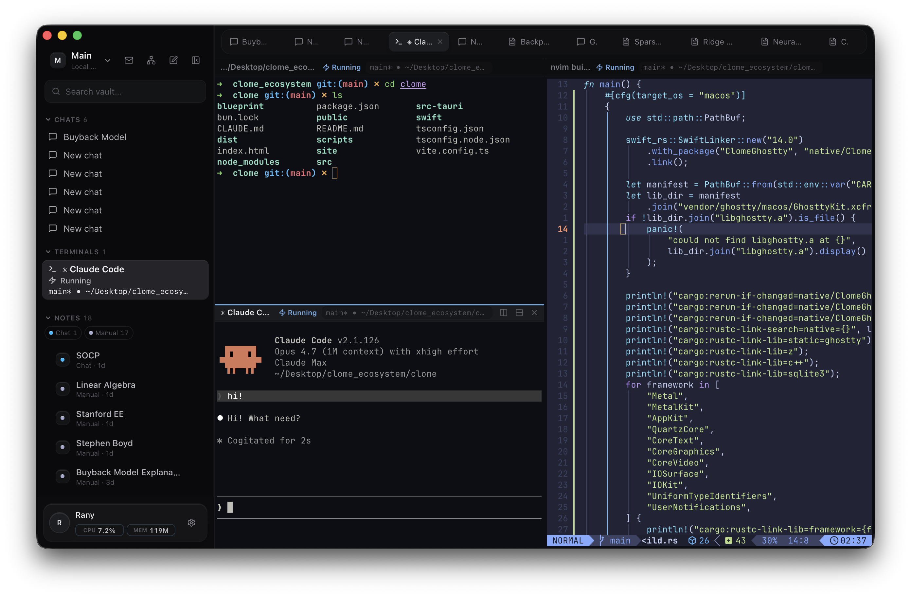

clome
$local agents, explicit tools, source-first. the repo is the spec — clone it, register a tool, fork the whole thing.
# what it is
an open desktop for running agents on your own machine. one app, one repo, no service in the middle.
every agent has a name, a model, and a small list of capabilities. every capability is a named tool — readable, swappable, removable. the agent can only do what those tools allow.
the vault — notes, mail, graph, terminal output — lives on disk. it is the agent's context surface. nothing is hidden behind a service. nothing phones home.
clone the repo. register a tool. write your own agent. ship a pr.
agents bound to a room
each chat picks an agent. each agent picks a model and the tools it can call. tool calls and vault reads surface inline as the turn happens.

capabilities, not catch-alls
tools are explicit, named, gated. a mail-read tool is not a file-write tool. the agent does only what you've registered — and you can read every tool's source.

the vault is the context
notes with wikilinks, mail indexed locally, a knowledge graph, terminal output. all on disk. all addressable. all readable by the agent through a tool you can audit.

the repo is the app
no service to call. no saas to depend on. clone it, register a new tool, write your own agent, fork the whole thing. mit licensed.
